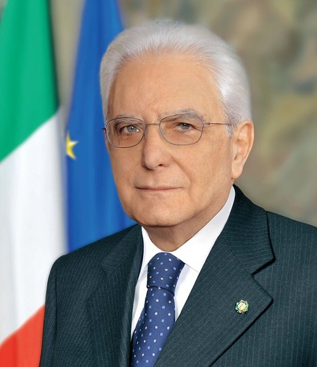

Más de la mitad del territorio italiano se encuentra formando una península que se al sureste del Mar Mediterráneo. Al norte se destaca la Cordillera de los Alpes donde se encuentran el Monte Cervino (4478 m) y Monte Rosa (4683 m). El pico más alto de Italia es Monte Bianco, en la frontera entre Italia y Francia, con unos 4807 metros de altura. Entre los Alpes y los Apeninos se encuentra el valle de Lombardía, bañado por el río Po.
La costa de Italia que se encuentra en el Mar Adriático es baja y con mucha arena. La costa oeste se caracteriza por tener una cantidad bahías y golfos. En Sicilia se encuentra el volcán Etna.
| DISTRIBUCIÓN POR SECTORES | % PIB TOTAL |
|---|---|
| Agricultura y pesca | 2,2% |
| Industria | 23,6% |
| Servicios | 74,2% |
| ESTRUCTURA DE LA BALANZA COMERCIAL. | (MILLONES € MINISTERO AFFARI ESTERI, 2020) |
|---|---|
| Exportaciones | 433.559 |
| Importaciones | 369.969 |
| Cobertura | 117,2% |
Gobierno
Mario Draghi, como nuevo Presidente del Consejo de Ministros, ha constituido el 13 de febrero un ejecutivo con seis partidos políticos (M5S, Liga, Partido Democrático, Forza Italia, Italia Viva y Liberi e Uguali).
Legislativo
La composición de las principales fuerzas políticas en ambas cámaras, fruto de las elecciones de marzo de 2018, era como sigue:
Instituciones del Estado y Miembros del Gobierno
Presidente de la República: Sergio Mattarella (febrero 2015, reelegido en enero de 2022)
Presidente del Consejo de Ministros: Mario Draghi (febrero 2021)
Presidenta del Senado: Maria E. Alberti Casellati (Marzo 2018)
Presidente de la Cámara de los Diputados: Roberto Fico (Marzo 2018)
Presidente de la República, Sergio Mattarella
Nació en Palermo el 23 de julio de 1941.
Licenciado en Derecho por la Universidad “La Sapienza” de Roma.Ejerció la abogacía y fue profesor en la Universidad de Palermo hasta 1983.
Se inició en política con la Democracia Cristiana en cuyas listas fue elegido diputado en 1983, 1987 y 1992.
Durante dicho período ocupó dos carteras ministeriales: Relaciones con el Parlamento (1987-1989) y Educación (1989-1990).
Participó en la fundación del Partido Popular de Italia, continuación de la Democracia Cristiana, en cuyas listas resultó elegido en las elecciones legislativas de 1994 y 1996.
Desempeñó nuevamente cargos en el Ejecutivo como Vicepresidente del
Consejo de Ministros (1998-99) y Ministro de Defensa (1999-2001).
En 2001 fue reelegido a la Cámara de Diputados en las listas de la coalición de centro-izquierda la “Margarita”.
En 2006 fue elegido diputado por séptima vez, en este caso en las listas del “Olivo” nueva coalición de centro-izquierda de la que pasó a formar parte la “Margarita”.
En 2007 participó en la fundación del Partido Democrático.
Tras abandonar el Parlamento en 2008, en 2009 fue designado miembro del Consejo de Presidencia de la Justicia Administrativa del que luego pasaría a ser Vicepresidente.
En 2011 fue designado por el Parlamento magistrado del Tribunal Constitucional, cargo que ocupó hasta enero de 2015.
Elegido Presidente de la República el 31 de enero de 2015.
El Presidente de la República fue reelegido el 29 de enero de 2022, con un mandato de 7 años.
La política exterior italiana se ha basado tradicionalmente en el apoyo al proyecto europeo, del que Italia fue uno de los miembros fundadores con firma del Tratado de Roma en 1957, y en materia de defensa colectiva a la relación transatlántica en el marco de la OTAN. Junto a estos dos ejes - europeo y transatlántico - otro ámbito prioritario es el Mediterráneo, debido a la proximidad geográfica, los vínculos históricos y comerciales con la región, y por ser actualmente la ruta natural de los flujos migratorios hacia Italia.
En consonancia con su proyección europea y atlántica, Italia es miembro de la UE, OTAN, OSCE y del Consejo de Europa. Italia también es miembro del G-7 y del G-20, cuya presidencia ostenta en 2021.
Desde una perspectiva global, Italia es uno de los mayores contribuyentes de fondos al presupuesto de la ONU. En la actualidad es el séptimo contribuyente al presupuesto regular de la organización y desde el 1 de enero de 2019 su aportación para el periodo 2019-2021 asciende a una cuota de 3,307% del total. Italia ocupó por 7ª vez un puesto como miembro no permanente del Consejo de Seguridad de Naciones Unidas para el periodo 2017-2018, compartiéndolo con Países Bajos. Italia ha sido también miembro del Consejo de Derechos Humanos en dos ocasiones y ha sido reelegida para el trienio 2019-2021.
talia es el octavo contribuyente al presupuesto de operaciones de mantenimiento de la paz. Italia participa actualmente en 36 misiones militares internacionales en 24 países, con un total de 7.488 efectivos
Italia es miembro de todos los Organismos y Agencias especializadas de NNUU; tres de ellos tienen su sede en Roma: la Organización de las Naciones Unidas para la Agricultura y la Alimentación (FAO), el Programa Mundial de Alimentos (PMA) y el Fondo Internacional de Desarrollo Agrícola (FIDA).